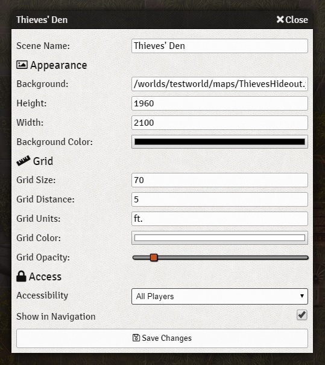

The Background Layer¶
The Background Layer is the bottom-most layer of the tabletop Canvas. The Background Layer is responsible for rendering your underlying background image and defining the interactable area of the scene. By default, the canvas uses an interactive area which is 1.5 times the dimensions of your background image (with a minimum of 1000px.)
Scene Configuration¶
When configuring a Scene, the fields under the Background section modify how the Background Layer is rendered.
Each background configuration option is described below:
- Background
- An image file to use as the scene background. The image file must be accessible to the host server, either served locally by the host or served remotely from a location which allows cross-origin resource sharing (CORS).
- Height
- The height in pixels of the image file. If this is not specified it will be automatically determined by the provided image file. Specifying a larger or smaller size than the native image height will result in it being scaled.
- Width
- The width in pixels of the image file. If this is not specified it will be automatically determined by the provided image file. Specifying a larger or smaller size than the native image width will result in it being scaled.
- Background Color
- The color of the canvas area surrounding the background image can be configured using this color selector.
In the above example, we configure the Thieves’ Den scene to use a certain background image with configured pixel dimensions. The background image is 1960 by 2100 pixels, and therefore the active game space allowed by the canvas will be 2940 by 3150 pixels with the map image in the center.
Background API¶
Mod developers may wish to interact with or manipulate this layer and can do so using the singleton instance of
the BackgroundLayer() class which is accessible from within the client as canvas.background.
-
class
BackgroundLayer()¶ A PIXI.Container subclass of CanvasLayer responsible for rendering the scene background image. The singleton instance of this class is accessed through
canvas.background.-
BackgroundLayer.draw()¶ Draw the background image. We first load the image texture and store it in the PIXI loader. Once the requested image has been fully loaded we draw it as a PIXI.Sprite
Returns: BackgroundLayer – Returns the instance of the Background Layer for convenient chaining
-